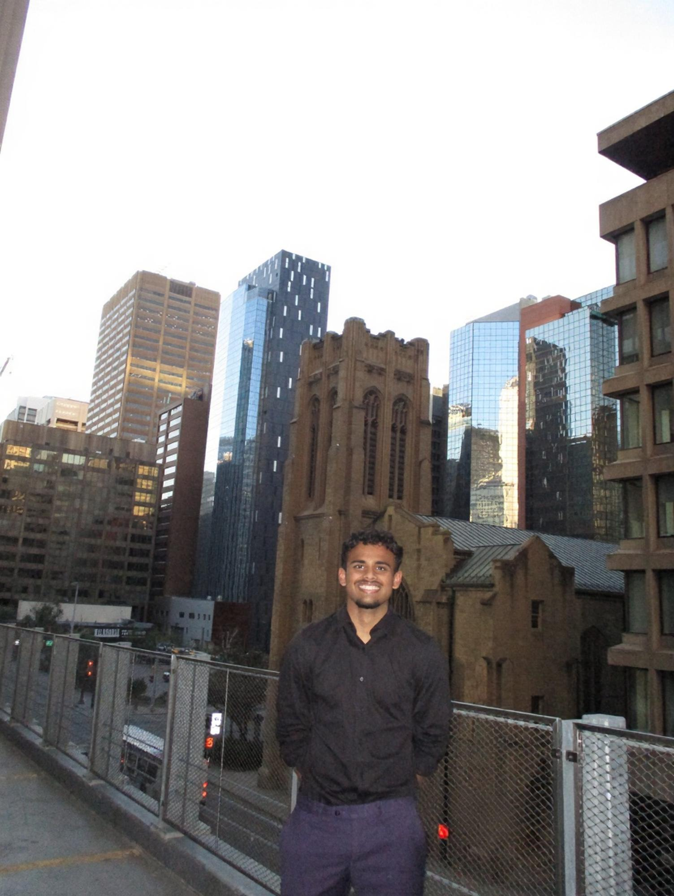

Muhammad Suleman Ahmad
Electrical Engineering • University of British Columbia
I am a third-year Electrical Engineering student at the University of British Columbia. Interested in Embedded Systems, Digital Logic Design, and Machine Learning
Currently, I work as an Embedded Software Test Engineer at Stryker, where I contribute to automated test frameworks for medical device hardware, build Python integration test pipelines, and perform electrical verification using oscilloscopes and function generators.
I also Co-lead the Applied AI team at UBC AgroBot, directing a 10-member engineering team developing real-time computer vision suites for an autonomous agricultural rover.